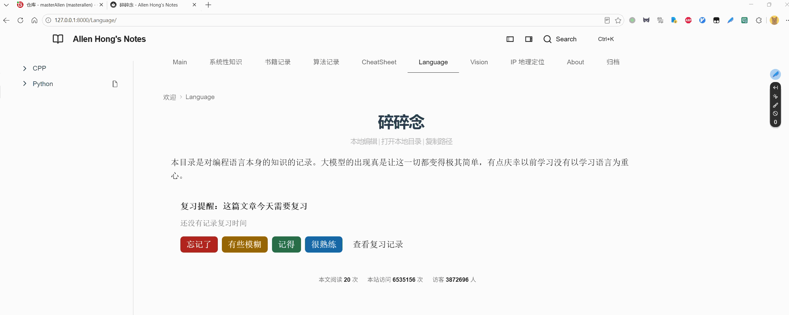

实现 VSCode/Cursor 快速打开文件
1. 现象和结论
本机已经打开了 Cursor，结果从外部调用 Cursor 去打开文件却要等待数秒。理论上应该很快，比如人工操作时，可以直接按下 Ctrl+P 输入文件路径，然后按下回车，文件就打开了。
结论：已有 Cursor 窗口打开文件本身很快，主要延迟发生在外部调用启动新 Cursor 进程、准备向已有实例转交请求之前。
当前普通调用路径：
→ 启动新的 Cursor.exe
→ 新进程执行一部分初始化
→ 发现已有 Cursor 实例
→ 通过本机 IPC 管道转交请求
→ 已有窗口打开文件
如果不启动新的 Cursor.exe 进程，而是直接使用 IPC 管道，则可以很快打开文件：
→ 连接已有 Cursor 的 IPC 管道
→ 调用 launch.start
→ 已有窗口打开文件
目前博客就是使用这种方式，把这种方式注册成一种协议，然后通过浏览器点击打开，打开速度极快，很香。配合点击关闭按钮隐藏到托盘，可以做到非常方便的打开和关闭。

2. 实验条件与计时结果
2.1 环境检查
- 已运行的 Cursor 主进程当时为 PID
28060。 - 主进程打开的工作区为
C:\Users\34802\Desktop\WorkSpaces\blog.code-workspace。 - 工作区包含
D:/Blog和D:/BlogSite。 - Windows 的
cursor://协议指向同一个 Cursor 安装目录，注册命令为：
"C:\Program Files\cursor\Cursor.exe" --open-url -- "%1"
- 博客编辑按钮是普通的
cursor://file/...链接，没有额外的 JavaScript 等待逻辑。 - 实验交替打开
D:\Blog\done\index.md与D:\Blog\done\About\1.Hi.md，没有写入文件内容。 - 这两个路径是同一个 NTFS 文件的硬链接；交替打开它们用于观察窗口标题变化。
2.2 初始完整路径计时
下面以已有 Cursor 窗口标题切换到目标文件作为可观察终点：
| 调用方式 | 观测到的时间 |
|---|---|
Windows 唤起 cursor:// 协议 |
5.19、6.23、6.43 秒左右 |
| 直接运行协议处理命令 | 3.42、3.54 秒左右 |
| 直接运行 Cursor.exe，并指定复用窗口 | 3.72 秒左右 |
cursor --reuse-window |
3.61、3.84、4.19 秒左右 |
这些测试都复用了原来的 blog 窗口。表中是不同批次的观测值，不能直接相减后认定 Windows 协议调用固定增加了多少时间；浏览器点击到 Windows 开始处理请求的耗时没有单独测量。
2.3 分段计时：请求转交前后分别花了多久
随后使用带日志的直接调用，并缩短窗口标题轮询间隔，取得两次有效对照：
| 时刻，从进程启动开始计算 | 第一次 | 第二次 |
|---|---|---|
| 准备给已有实例前台权限的日志 | 2.237 秒 | 2.240 秒 |
Sending env to running instance |
2.245 秒 | 2.250 秒 |
Sent env to running instance |
2.359 秒 | 2.353 秒 |
| 窗口标题切换到目标文件 | 2.483 秒 | 2.464 秒 |
因此，这两次实验中：
- 发出转交请求之前，已经消耗约 2.24 秒。
- 发出请求到窗口标题切换，仅约 0.22～0.24 秒。
- 主要等待已经发生在已有窗口收到打开请求之前。
2.4 直接连接已有实例
实验直接连接 Cursor 已有管道，先查询进程编号，再交替发送四次打开请求：
| 测试 | IPC 调用返回 | 窗口标题切换 |
|---|---|---|
| 第一次 | 0.0838 秒 | 0.1989 秒 |
| 第二次 | 0.1965 秒 | 0.4012 秒 |
| 第三次 | 0.1497 秒 | 0.2372 秒 |
| 第四次 | 0.1279 秒 | 0.2453 秒 |
初次连接并调用 getMainProcessId 耗时约 0.0376 秒，返回 PID 28060，与已有实例一致。
这里的四次打开测试是在 Python 已启动、管道已连接的情况下进行的，不包含 Python 启动和建立连接的全部耗时。窗口标题变化是本次实验采用的可观察终点，不等于完成了画面渲染或窗口切到最前台的验证。
3. 直接连接已有实例的原理
3.1 找到已有 Cursor 的管道
用 PowerShell 枚举 Windows 命名管道：
[System.IO.Directory]::GetFiles('\\.\pipe\') |
Where-Object { $_ -match 'main-sock$' }
举例而言，当时找到并连接的是：
\\.\pipe\22026640-3.22.7-main-sock
这个管道名称不能写成所有机器都通用的常量；Cursor 版本或用户数据目录不同，名称也可能不同。另外，main-sock 后缀也可能出现在其他基于 VS Code 的程序中，仅靠名称筛选还不足以确认目标是 Cursor。
3.2 和 Cursor 进行通信总览
实验中使用 probe.call 和 Cursor 通信。它是实验脚本自行编写的 RPC（远程过程调用）封装。
它完成：
→ 编码请求头和参数
→ 添加传输消息头
→ 写入命名管道
→ 读取完整响应
→ 解码并匹配请求编号
→ 返回结果或抛出错误
3.3 编码请求
具体代码如下，后面进行具体解释：
def call(self, name, args):
request_id = self.seq
self.seq += 1
header = [100, request_id, "launch", name]
payload = enc(header) + enc(args)
self.send(payload)
response_header, response_body = self.recv()
if response_header != [201, request_id]:
raise RuntimeError((response_header, response_body))
return response_body
下面进行举例解释。首先当我们知道管道之后，想先调用 getMainProcessId，确认对方是已有 Cursor。具体方法就是发送一个 RPC 请求：
probe.call("getMainProcessId", [])
结合上面的代码，相当于发送了如下的请求：
header = [100, request_id, "launch", "getMainProcessId"]
args = []
| 字段 | 含义 |
|---|---|
100 |
调用一个有返回结果的方法 |
request_id |
当前调用编号，与响应匹配 |
launch |
Cursor 已注册的通道 |
getMainProcessId |
通道上的方法 |
args |
参数列表 |
Cursor 接收请求之后，会在 launch 通道对应的服务上调用 getMainProcessId 方法，并返回结果。launch 是 Cursor 已有的通道；getMainProcessId 也是它已有的方法。
再比如，我们想让 Cursor 打开文件，具体方法就是发送一个 RPC 请求，具体内容是：
probe.call(
"start",
[
{
"_": [r"D:\Blog\done\index.md"],
"reuse-window": True,
},
{},
],
)
相当于发送了如下的请求：
header = [100, request_id, "launch", "start"]
args = [
{
"_": ["D:\\Blog\\done\\index.md"],
"reuse-window": True,
},
{},
]
相当于 Cursor 内部调用：
launch.start(
{
"_": ["D:\\Blog\\done\\index.md"],
"reuse-window": true
},
{}
);
第一个参数是类似命令行解析后的参数对象；_ 是文件路径列表，reuse-window 要求复用窗口。第二个参数是调用方环境变量，实验中传入空对象 {}。这两个参数由 start(args, userEnv) 的方法签名决定。
这些方法来自本机 Cursor 的 main.js，并通过 VS Code 上游的 launchMainService.ts 核对：ILaunchMainService 声明了 start(args, userEnv) 和 getMainProcessId()，后者的实现返回主进程的 process.pid。launch 通道的获取和调用流程则位于主进程 main.ts。资料来源详见第 4 节。
3.4 编码为二进制
实际传输时，需要把上面的请求头和参数分别编码，再拼接成一个消息体，即 enc(header) + enc(args)。
实验用到的类型：
| 标记 | 类型 | 后续内容 |
|---|---|---|
0 |
JavaScript undefined |
无 |
1 |
字符串 | 字节长度、UTF-8 内容 |
4 |
数组 | 元素个数、逐项编码 |
5 |
对象 | JSON 字节长度、JSON 内容 |
6 |
整数 | 变长整数 |
例如字符串 launch：
01 06 6C 61 75 6E 63 68
│ │ └── UTF-8 字节 ──┘
│ └─ 长度为 6
└─ 类型为字符串
请求头 [100, 0, "launch", "start"]：
04 04 数组，共 4 个元素
06 64 整数 100
06 00 整数 0
01 06 6C 61 75 6E 63 68 字符串 launch
01 05 73 74 61 72 74 字符串 start
上面的字节使用十六进制表示，例如 64 对应十进制整数 100。长度和整数采用变长编码：每字节贡献 7 位，最高位表示后面是否还有字节；例如 100 → 64，200 → C8 01。字符串长度按 UTF-8 字节数计算，中文字符串不能直接使用字符个数作为长度。
这些规则来自 ipc.ts 中的 DataType、serialize()、deserialize() 和变长整数读写函数，详见第 4.2 节。
3.5 传输层消息头
编码后，还需要按 Cursor/VS Code 这套 IPC 实现的传输格式，在消息体前添加传输层消息头。RPC 是一种调用方式，没有统一规定所有实现都必须使用下面的格式。
┌────────┬──────────┬──────────┬────────────┬──────────┐
│ 类型 │ 消息编号 │ 确认编号 │ 内容长度 │ RPC 内容 │
│ 1 字节 │ 4 字节 │ 4 字节 │ 4 字节 │ N 字节 │
└────────┴──────────┴──────────┴────────────┴──────────┘
消息头包含一个单字节类型字段，以及三个采用大端序的 4 字节整数，合计 13 字节。“内容长度”只计算后面的 RPC 消息体，不包含这 13 字节消息头。
def send(self, payload):
transport_header = struct.pack(
">BIII", # >BIII 表示一个单字节整数和三个大端序的 32 位整数。
1, # 普通消息
0, # 传输层消息编号
0, # 传输层确认编号
len(payload),
)
self.pipe.write(transport_header + payload)
这里有两种编号：传输头中的消息编号、确认编号，以及 RPC 请求头中的 request_id。实验采用的普通 Protocol 会把前两者填为 0；request_id 仍逐次增加，用来匹配方法调用与响应。
这个格式来自 ipc.net.ts 中的 ProtocolConstants.HeaderLength、ProtocolWriter 和 Protocol.send()，详见第 4.2 节。
3.6 读取返回结果
管道是字节流，一次读取不保证恰好得到一条完整消息，所以需要维护缓冲区：
读取字节并追加到缓冲区
↓
缓冲区是否已有 13 字节传输头？
↓
取出内容长度 N
↓
是否已有完整的 13 + N 字节？
↓
取出 RPC 内容，解码响应头和返回值
假如成功响应，则返回结果为：
[201, request_id] # 响应头
result # 返回值
202、203 表示错误响应，不能当作成功处理。
call() 还需要检查响应编号与当前 request_id 一致。例如 [201, 0] 表示第 0 次调用成功，后面的值才是该方法的返回结果。协议类型和响应格式可在第 4.2 节所列的 ipc.ts 中核对。
3.7 连接初始化
第一次 call() 之前，还有连接初始化步骤：
打开 Cursor 命名管道
↓
发送连接身份 "main"
↓
接收服务端初始化消息 [200]
↓
发送客户端初始化消息 [200]
↓
调用 launch.getMainProcessId，核对实例
↓
调用 launch.start，打开文件
↓
关闭管道
这里的 "main" 是通信上下文名称；[200] 中的 200 是初始化消息类型，和 HTTP 状态码没有关系。初始化消息同样使用前面的编码和 13 字节传输头，并不是把字符串 "[200]" 直接写入管道。
这个顺序依据 ipc.ts 中 IPCClient、ChannelClient 和 ChannelServer 的实现还原。实验封装只处理当前这些初始化消息和串行调用，不是通用的并发 RPC 客户端。
4. 通信机制的资料来源
4.1 第一手依据：本机安装的 Cursor 代码
安装目录中读取过的文件：
C:\Program Files\cursor\resources\app\package.json：确认实验时安装版本为 3.22.7。C:\Program Files\cursor\resources\app\out\main.js：包含主实例管道命名、claimInstance()、launch通道和转交请求的实现。C:\Program Files\cursor\resources\app\out\cli.js：普通 CLI 会派生 Cursor 进程。C:\Program Files\cursor\resources\app\bin\cursor.cmd：Windows CLI 启动包装脚本。
本机 main.js 中实际存在这些标识和日志文字：
mainIPCHandle
claimInstance
Sending some foreground love to the running instance:
Sending env to running instance...
Sent env to running instance. Terminating...
按源码语义还原，转交的关键步骤类似于：
const client = await connect(mainIPCHandle, "main");
const launch = ProxyChannel.toService(
client.getChannel("launch"),
{ disableMarshalling: true }
);
await windowsAllowSetForegroundWindow(launch, log);
await launch.start(args, process.env);
上面是便于阅读的语义还原，不是直接复制压缩后的本机代码，也不是可以独立运行的完整 JavaScript 程序。
4.2 VS Code 上游源码：用于核对结构和协议
-
- 创建、初始化服务后调用
claimInstance()。 - 连接已有实例并使用
launch通道。 - 处理 Windows 前台窗口权限。
- 创建、初始化服务后调用
-
- 请求类型
100，初始化与响应类型200、201等。 serialize()/deserialize()。- 通道名、方法名和参数的编码方式。
IPCClient的连接身份与初始化行为。
- 请求类型
-
- 13 字节消息头。
- 普通消息的收发。
-
- Windows 命名管道连接。
- 根据用户数据路径和版本生成静态管道名的机制。
-
打开文件的方法与参数：launchMainService.ts
ILaunchMainService声明了start(args, userEnv)和getMainProcessId()。start将文件打开请求交给窗口服务，处理reuse-window等参数。getMainProcessId()返回主进程编号。
这些链接指向上游 main 分支，会随时间变化。关于本机 Cursor 的判断，以当时安装代码及实际调用结果为直接依据，不能仅凭最新 VS Code 源码推断所有 Cursor 版本行为相同。
5. 实验协议封装代码
下面保留实验所用协议封装的核心逻辑，便于理解和复现。它是教学用的实验代码，不是已完成的博客修复程序。
限制：只实现实验需要的类型与普通消息；未完成自动实例发现、多窗口选择、前台权限处理和失败回退。应传入经过核对的当前 Cursor 管道名。这里把 Python None 映射到协议 undefined，并没有实现对 JSON null 的独立表示。
import ctypes
import json
import msvcrt
import struct
import time
from ctypes import wintypes
kernel32 = ctypes.WinDLL("kernel32", use_last_error=True)
kernel32.PeekNamedPipe.argtypes = [
wintypes.HANDLE,
ctypes.c_void_p,
wintypes.DWORD,
ctypes.c_void_p,
ctypes.POINTER(wintypes.DWORD),
ctypes.c_void_p,
]
kernel32.PeekNamedPipe.restype = wintypes.BOOL
def vql(value):
result = bytearray()
while value >= 128:
result.append((value & 127) | 128)
value >>= 7
result.append(value)
return bytes(result)
def enc(value):
if value is None:
return b"\x00" # 实验约定：表示 undefined。
if isinstance(value, str):
data = value.encode("utf-8")
return b"\x01" + vql(len(data)) + data
if type(value) is int:
return b"\x06" + vql(value)
if isinstance(value, list):
return b"\x04" + vql(len(value)) + b"".join(map(enc, value))
data = json.dumps(value, separators=(",", ":")).encode("utf-8")
return b"\x05" + vql(len(data)) + data
def decode(data):
position = 0
def number():
nonlocal position
value = 0
shift = 0
while True:
byte = data[position]
position += 1
value |= (byte & 127) << shift
if not byte & 128:
return value
shift += 7
def item():
nonlocal position
tag = data[position]
position += 1
if tag == 0:
return None
if tag == 6:
return number()
if tag == 4:
return [item() for _ in range(number())]
size = number()
raw = data[position:position + size]
position += size
if tag == 5:
return json.loads(raw)
if tag == 1:
return raw.decode("utf-8")
if tag in (2, 3):
return raw
raise ValueError(f"Unsupported data tag: {tag}")
header = item()
body = item() if position < len(data) else None
return header, body
class Probe:
def __init__(self, pipe_name):
self.pipe_name = pipe_name
self.buffer = bytearray()
self.seq = 0
def __enter__(self):
self.pipe = open(self.pipe_name, "r+b", buffering=0)
self.handle = msvcrt.get_osfhandle(self.pipe.fileno())
try:
self.send(enc("main"))
header, _body = self.recv()
if header != [200]:
raise RuntimeError(f"Unexpected initialization: {header}")
self.send(enc([200]) + enc(None))
return self
except BaseException:
self.pipe.close()
raise
def __exit__(self, *_):
self.pipe.close()
def send(self, payload):
header = struct.pack(">BIII", 1, 0, 0, len(payload))
self.pipe.write(header + payload)
def recv(self):
deadline = time.perf_counter() + 3
while time.perf_counter() < deadline:
if len(self.buffer) >= 13:
size = struct.unpack_from(">I", self.buffer, 9)[0]
if len(self.buffer) >= 13 + size:
payload = bytes(self.buffer[13:13 + size])
del self.buffer[:13 + size]
return decode(payload)
available = wintypes.DWORD()
ok = kernel32.PeekNamedPipe(
self.handle, None, 0, None,
ctypes.byref(available), None,
)
if not ok:
raise ctypes.WinError(ctypes.get_last_error())
if available.value:
self.buffer.extend(self.pipe.read(available.value))
else:
time.sleep(0.002)
raise TimeoutError("IPC response timed out")
def call(self, name, args):
request_id = self.seq
self.seq += 1
self.send(enc([100, request_id, "launch", name]) + enc(args))
header, body = self.recv()
if header != [201, request_id]:
raise RuntimeError((header, body))
return body
使用示例；运行前需要核对当前管道：
pipe_name = r"\\.\pipe\22026640-3.22.7-main-sock"
with Probe(pipe_name) as probe:
print("Cursor PID:", probe.call("getMainProcessId", []))
probe.call(
"start",
[
{"_": [r"D:\Blog\done\index.md"], "reuse-window": True},
{},
],
)
这里的 start 返回只表示 RPC 调用完成，不能把返回时刻直接作为文件已显示的时刻。原实验另行观察已有窗口标题变化，才得到第 2 节的显示时间。